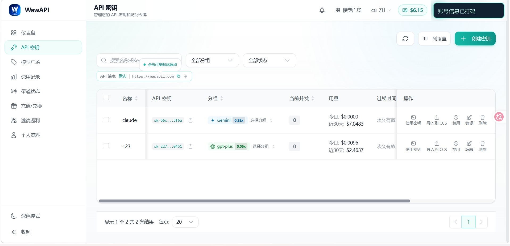
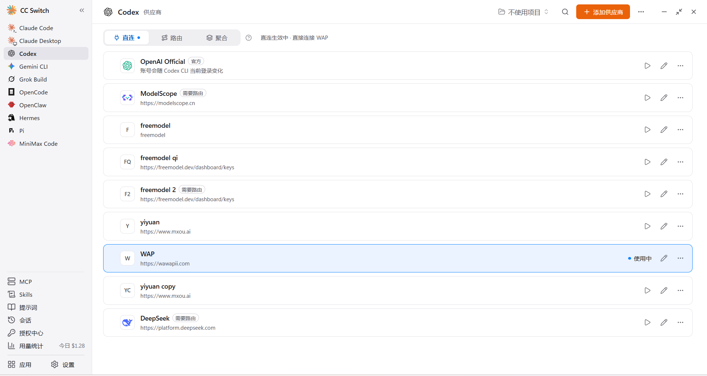
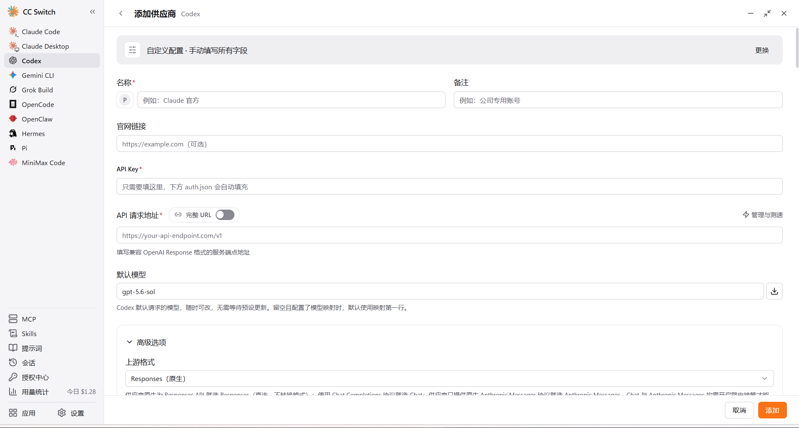
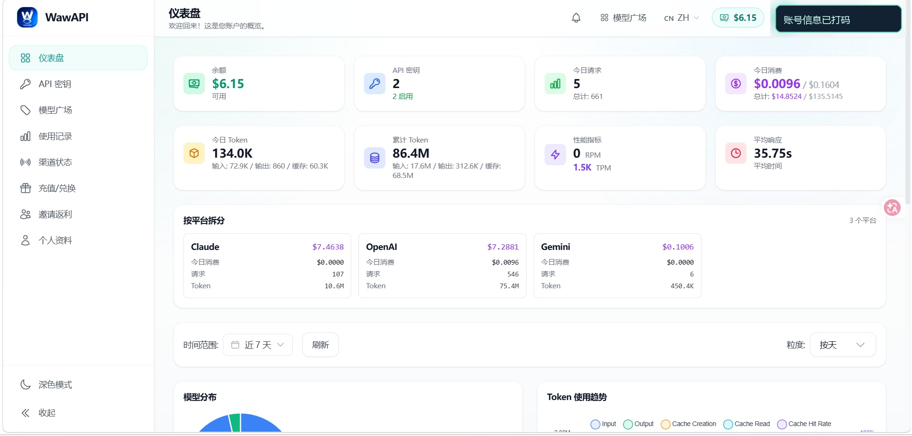

WawAPI
提供模型、余额和 API 端点。这里负责创建并管理 Key。
A practical setup guide
从 WawAPI 拿到兼容 OpenAI 的 API 凭证，经由 CC Switch 统一管理，再让 OpenCode 与 Codex 在 Windows 上真正跑起来。
The route
这不是“把 Key 粘贴到一个地方”这么简单，而是把服务商、密钥管理器和客户端分成三层。
提供模型、余额和 API 端点。这里负责创建并管理 Key。
保存配置、切换供应商，让多个 CLI 共用一套入口。
终端里的 AI 编程代理，按配置文件或环境变量发请求。
另一个客户端。重点是把 Key 放在正确的配置层，而不是项目代码里。
Step 01 / WawAPI
截图中的账号、余额和密钥均为示例；请以你当前看到的 WawAPI 页面为准。
先说清楚：API Key 等同于密码。教程只展示脱敏后的界面，下面命令中的 sk-your-key 也必须替换成你自己的值，不能照抄。
打开 WawAPI，登录后进入仪表盘。先确认余额、模型可用性和当前 API 端点。余额及价格会动态变化，不要把截图里的数字当成当前报价。
左侧点击“API 密钥”，再点击右上角“创建密钥”。建议用用途命名，例如 windows-opencode，以后更容易定位和撤销。

确认 API 端点复制密钥可导入 CC Switch你需要保存的只有：API Base URL 和 API Key。Base URL 通常可以在 WawAPI 的 API 端点区域看到；如果服务商给出带版本路径的地址，必须完整保留。
# 私下记录，不要提交到 Git
API Base URL: https://wawapii.com/v1
API Key: sk-your-key如果页面提供“导入到 CCS”，可以直接导入；手动配置的原理完全相同。
Step 02 / CC Switch
CC Switch 的价值是把供应商配置集中起来，减少你在多个客户端之间反复改环境变量的次数。
从 CC Switch 官方页面下载 Windows 版本，安装后打开。左侧选择“Codex”，顶部保持“直连”模式，再点击右上角“添加供应商”。截图中的 WAP 条目就是已经保存好的供应商示例。
官方地址 → https://ccswitch.io/zh/
① 选择 Codex② 直连模式③ 添加供应商④ WAP 配置在 CC Switch 中选择添加供应商或自定义 OpenAI 兼容服务。填写名称、Base URL 和 Key；模型名要使用 WawAPI 当前支持的模型标识，不能只凭感觉填写。
建议先只填必需项，跑通后再做高级设置。
名称：WawAPI Base URL：https://wawapii.com/v1 API Key：sk-your-key
从 WawAPI 模型广场或公开可用性页面复制准确的模型 ID。
模型：your-model-id 温度：默认 流式：开启（若支持）

① 名称② API Key③ API 请求地址④ 默认模型⑤ 添加保存点击右下角“添加”，回到供应商列表后点击该条目的播放/启用按钮。完成一次最小请求，再回到 WawAPI 仪表盘观察请求数、Token 和余额变化。如果返回 401，优先重新复制 Key；如果返回模型不存在，先检查模型 ID。

余额 / 用量确认调用是否计费Step 03 / OpenCode
OpenCode 支持终端、桌面端和 IDE 扩展。下面用 Windows PowerShell 讲最容易验证的路径。
从官方页面下载 Windows 版本，或按官方文档选择安装方式。安装完成后重新打开 PowerShell。
PS C:\> opencode --version能看到版本号，说明命令已进入 PATH。
如果 CC Switch 能为 OpenCode 写入配置，优先使用它；手动配置时遵循你当前 OpenCode 版本的 JSONC 配置格式。
PS C:\> $env:OPENAI_API_KEY = 'sk-your-key'这条命令只对当前 PowerShell 窗口生效，适合第一次快速验证。
建议顺序：先用临时环境变量跑通，再把长期配置交给 CC Switch 或 OpenCode 配置文件。这样出错时能快速判断到底是 Key、端点还是客户端配置的问题。
PS C:\your-project> opencodeStep 04 / Codex
Codex 的具体配置入口会随版本变化。核心仍然只有三件事：端点、Key、模型。
在 CC Switch 中切换到 Codex，选择刚才建立的 WawAPI 配置并启用。若有“导入 / 导出 / 同步”按钮，先导出一份备份，再执行写入。
.env 后提交到 Git进入一个空项目或测试项目，让 Codex 执行一个无副作用的小任务，例如“列出当前目录文件”。第一次验证不要直接让它修改重要代码。
PS C:\your-project> codex --version如果客户端能启动但请求失败，跳到下面的排错表；不要同时更改多个参数。
Troubleshooting
只改一个变量，再重试一次。这样你才能知道是哪一层出了问题。
重新从 WawAPI 复制完整 Key；检查前后是否多了空格或引号；确认 CC Switch 当前启用的是这一条配置。不要把 Key 发给别人“帮你测试”。
先检查模型 ID 是否来自 WawAPI 当前模型列表；再检查 Base URL 是否多写或少写了版本路径。模型名称大小写、连字符和后缀都可能影响结果。
确认 PowerShell 没有被代理、VPN 或企业网络拦截；在 WawAPI 仪表盘看请求是否到达；如果完全没有请求记录，问题通常还在本地配置层。
完全退出客户端和终端，再重新打开；确认没有同时存在系统环境变量、用户环境变量和 CC Switch 写入的配置。临时验证时优先检查当前窗口里的变量。
Final check
勾选只是本地记录，刷新页面不会上传任何内容。